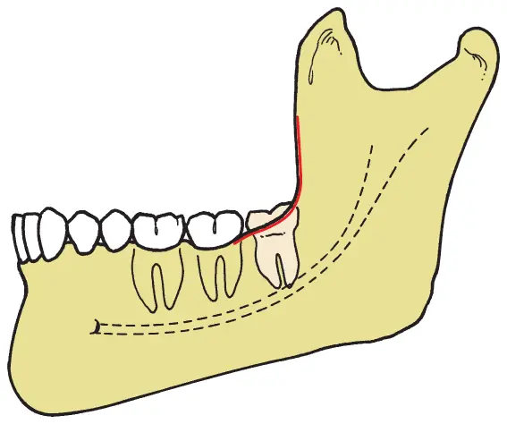
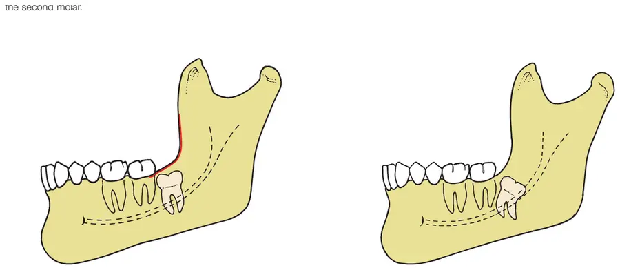

نسخه استخراجشده؛ ترجمه یا تأیید علمی انجام نشده است. وضعیت: captured
این طبقهبندی با بقیه فرق دارد. سیستمهای پیشین عواملی را طبقهبندی میکنند که کشیدن را سرراستتر یا دشوارتر میکنند، ولی این سیستم در آن دسته نمیگنجد. با این حال، سیستمی است که بیشتر شرکتهای بیمهی دندانپزشکی به کار میبرند و جراح بر اساس آن هزینهی خدمات را تعیین میکند.

سه دسته:
و یک هشدار مهم که بهراحتی از چشم میافتد: نهفتگی نیمهاستخوانی معمولاً دشوارتر از نهفتگی کاملاً استخوانی است — یعنی ترتیب سختی این سه دسته، آن ترتیب خطیای که انتظار داری نیست.
و یک نقد جدی به طبقهبندی بیمه: هرچند این طبقهبندی بهطور گسترده به کار میرود، اغلب هیچ ارتباطی با سختی کشیدن یا احتمال عوارض ندارد. پارامترهای زاویه، رابطه با راموس، مورفولوژی ریشه و سن بیمار برای طرح درمان بهمراتب مرتبطترند از سیستمی که بیمهگران شخص ثالث به کار میبرند. جراح باید از همهی اطلاعات موجود برای تعیین سختی جراحی پیشنهادی استفاده کند.

یازده عاملی که جراحی نهفته را کمدشوارتر میکنند:
★ = عواملی که در بیمار جوان حاضرند. یعنی پنج عامل از یازده عامل آسانکننده، صرفاً از جوان بودن بیمار میآیند.
یازده عاملی که جراحی نهفته را دشوارتر میکنند:
★ = عواملی که در بیماران مسنتر حاضرند. یعنی چهار عامل از یازده عامل دشوارکننده، صرفاً از مسنتر بودن بیمار میآیند — و همین است که سن را به اثرگذارترین متغیر منفرد در پیشبینی سختی تبدیل میکند.